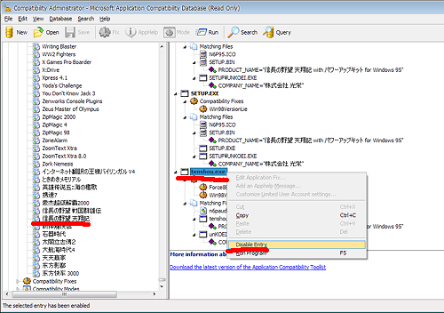

概要
天翔記を256モードではなく、フルカラーで起動するためのキットとなります。
追加補足 256モードへの自動切り替わりを正しく解除する方法
先述では、unKOEI.exeのファイル名を変更することで256モードを避ける方法を記載しましたが、
｢ddraw.dllのフルカラーキットが天翔記フォルダにある｣という条件の下であれば、
256色への自動切り替わりを正しく解除してしまうのが理想的ですので、ここではそれを紹介します。
それはtenshou.exeを256色モードのデータベースリストから除去するというものです。
-
方法
- まず、Microsoft Application Compatibitily Toolkitをダウンロード
Windows XP:
Microsoft Application Compatibility Toolkit 5.0
Windows (Vista / 7 / 8 / 8.1 / 10)(Microsoftのサイトに記載は無いがWindows 8以降もこちら):
Microsoft Application Compatibility Toolkit 5.6
(※ダウンロードがたくさん見えますが、下から3つ目のDOWNLOAD)
- インストールする。
- スタートメニューより、｢Microsoft Application Compatibility Toolkit｣⇒「Compatibirity Administrator」を起動。以下のような画面
- ｢Application｣の中に下の方に｢信長の野望 天翔記｣が見つかる。
(Applicationを開こうとすると、PCの性能によってはしばらく時間がかかります)
- その中で一番下の方、｢tenshou.exe｣で右クリックをして、 ｢Disable Entry｣とする。
- 「Compatibirity Administrator」を終了。
- (※条件を見ればわかりますように、tenshou.exe, n6paudio.dll, unKOEI.exeというファイル名やプロダクトの内容が一致することが256色へと自動的に切り替わる条件となっているのです。
このため、先述では、unKOEI.exeのファイル名を変更すると、256色への切り替わりを回避することが出来たというわけです。)
- ※参考記事
